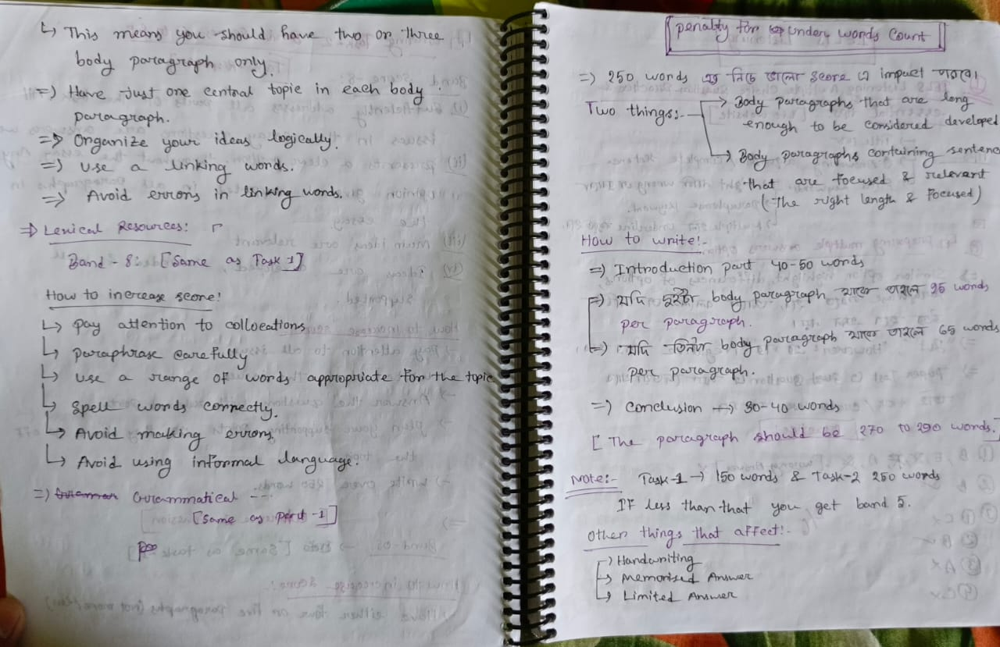
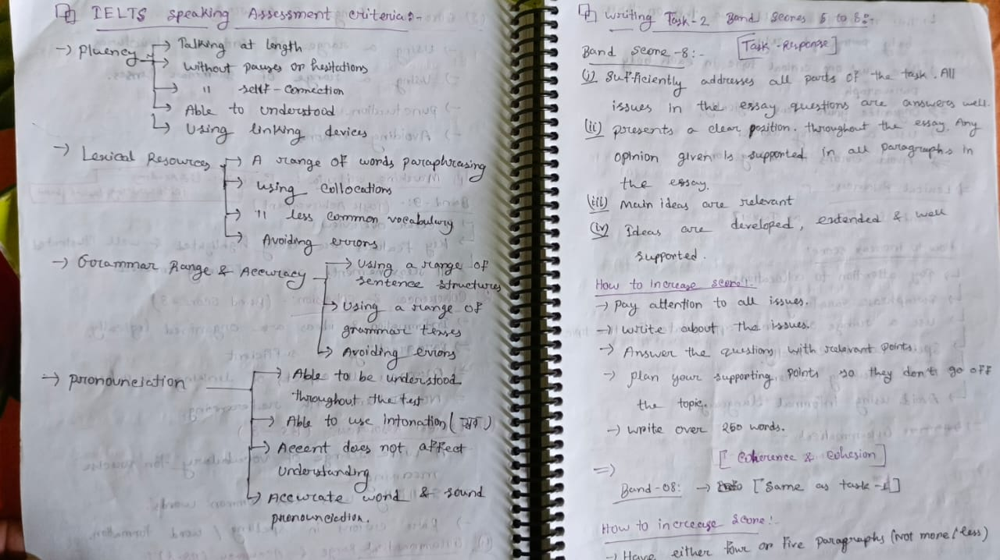
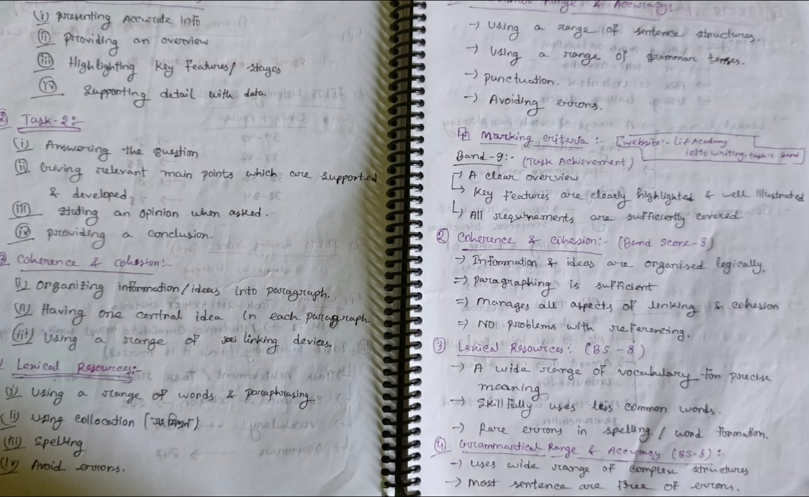
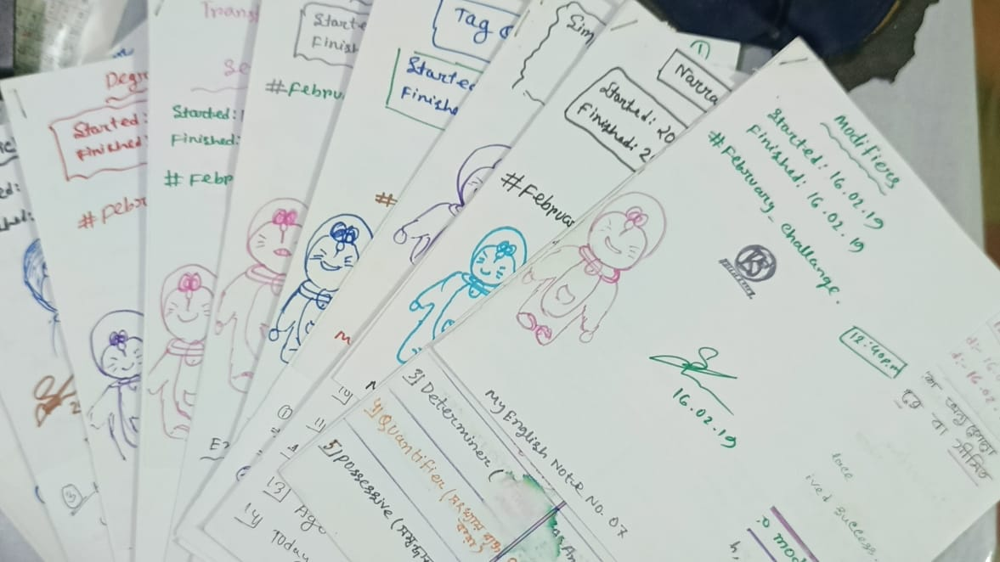
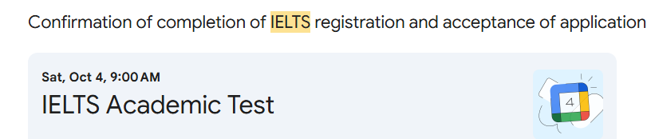

Preparing for IELTS was a journey that tested not only my English skills but also my patience, discipline, and determination. When I first started, I realized that mastering all four skills Listening, Reading, Writing, and Speaking required a structured plan, consistent practice, and proper guidance.
The Start of the Journey
I officially began my IELTS journey in July 2024, right after completing my final BSc exams. One of my friends and I planned to prepare together.
He suggested joining a coaching centre, but I wanted to self-study. English has been part of our school, college, and university life, so I believed
we could prepare on our own.
We created a proper study plan and consulted someone who had recently taken IELTS. She helped us by suggesting a list of essential books. We bought
them from a local bookshop and planned to begin together.
Everything was going well until the July uprising happened. The internet was shut down, and communication became impossible. At the same time, I had
to give more time to my thesis because my advisor wanted further improvements. I was also working as a Teaching Assistant at IIUC, so managing both
became difficult.
As a result, I had to pause my IELTS preparation indefinitely, and our initial plan came to an end.
Still, I wanted to take the IELTS exam, so I knew I had to restart. I made a new plan, but that also failed because I was busy with the Learnathon event and my thesis work. Again, I had to pause my preparation. I finally decided that I would only restart once those responsibilities were done.
Restarting the IELTS Preparation
After completing my thesis and the Learnathon event,I restarted my IELTS preparation in July 2025. This time, I was more focused and determined.
I invited my friend to join again, but he was no longer interested in taking IELTS, so I continued alone.
I created a strict schedule for myself and began following it seriously.
I started by exploring various online resources.I found several websites and YouTube channels offering tips and strategies for each section. One of the best resources I found was Liz Academy.
Exploring the Liz Academy Website
I completed the entire website from tips to sample answers and detailed explanations. It took more than a month because of my busy schedule and ongoing
project work.
The website had everything a learner could ask for.I made handwritten notes of almost every important point so I could revise later.



Some pictures of my notes
Exploring More Resources
After completing Liz Academy, I explored IELTS Simon, IELTS Advantage, and many more platforms.
I first had to choose between Computer-based and Paper-based IELTS. After researching, I found Computer-based IELTS faster, easier, and more convenient.
So, I selected the computer-based format.
Then I searched for free resources for practice. Many websites required payment, but I found two platforms that offered high-quality free practice:
The only challenge was Speaking practice, as no good free speaking platforms existed. So, I practiced speaking by recording myself and using the
mirroring technique.
I also used AI tools like ChatGPT and Google Gemini, and joined English-speaking Discord servers such as:
English Speaking Practice, The English Hub, Make Friends Here.
Talking to foreigners helped me improve my fluency naturally. Since I always try to enjoy whatever I learn, I made the speaking practice
fun instead of stressful. I also made friends from different countries through these servers.And they are still connected with me.
Preparation Process
My preparation process was structured and consistent. I created a schedule where I practiced two Cambridge tests daily one in the morning and one in the
evening.
For writing, I used Engnovate.
Grammar and vocabulary were my weaknesses, so I made a separate plan for them.
For grammar, I used a notebook I had created during college. It always helped me to improve. For vocabulary, I used ChatGPT, blog posts, and Cambridge books. I created a new notebook to write daily vocabulary and their meanings.

The picture above is of my old grammar notes, originally guided by my school English teacher, Jahangir Sir. I recreated the same notes during my college days for HSC, and now they helped me again in IELTS preparation.
The IELTS Exam
After months of preparation, I finally booked my test date through the British Council Bangladesh website. I selected the Chittagong branch and scheduled the exam for October 4th, 2025.

The confirmation email from British Council Bangladesh
The Final Preparation
As the exam day approached, I received premium preparation materials from British Council. They were much harder than the Cambridge tests, but extremely helpful. I continued taking mock tests and focused on improving all four skills.
The Exam Day
I reached the exam centre early in the morning so early that the roads were empty. After verification and instructions, we were taken to our seats and the test began.
During the Test
I stayed calm and focused. Listening and Reading felt easier than expected.
Writing was manageable, and I finished on time.
After that, we had a break before the Speaking test.
My speaking slot was the last one. While waiting, I talked to a friendly candidate who shared some funny stories about his preparation.
When my turn came, the examiner greeted me warmly and made the environment comfortable.
The speaking test went smoothly. I answered confidently and felt satisfied afterward.
The next day, I received the result. It was B2 in all sections. I expected a higher score, so the result made me a bit sad. But the journey taught me
discipline, consistency, and confidence.
Sometimes things don’t go as expected, but the journey itself becomes the most valuable part. I prepared entirely on my own, and I am proud of that.
Language learning never stops. I continue practicing English every day, and I have also started learning Turkish and German on Duolingo. Both are difficult, but I believe consistent practice will help me master them too.← Back to Blog